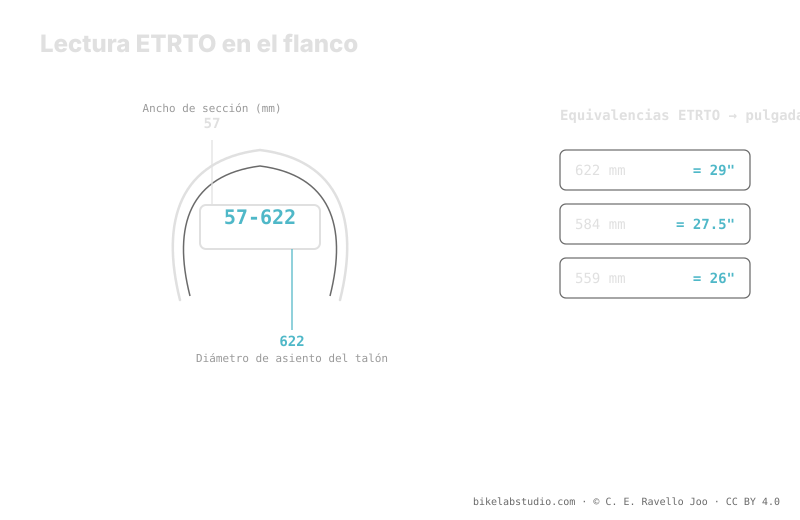

En 57-622, el 57 es el ancho nominal en milímetros y el 622 es el diámetro del asiento del talón en milímetros: eso es la rueda de 29". 584 es 27.5" y 559 es 26". A diferencia de las pulgadas de marketing, la ETRTO no engaña sobre si neumático y llanta encajan. En el flanco también van la presión mínima y máxima del fabricante; en aros hookless el techo suele ser 5 bar (72.5 PSI). El valor de uso lo cierra la calculadora, no el flanco.
"29 pulgadas" es una etiqueta comercial; "622" es un hecho. Si alguna vez has dudado si un neumático monta en tu llanta, o por qué dos "2.25" miden distinto, la respuesta está en esos dos números pequeños del flanco. La presión no es un número, pero la medida sí lo es.
La ETRTO te dice qué neumático tienes; la Calculadora de Presión PSI te dice a qué presión rodarlo según tu ancho, llanta, peso y disciplina. ▶ Abrir la calculadora PSI
ETRTO son las siglas de la European Tyre and Rim Technical Organisation, el organismo que estandariza cómo se miden neumáticos y llantas. En vez de dejar el tamaño a las pulgadas comerciales —que redondean y varían—, la ETRTO fija dos milímetros duros: el ancho nominal y el diámetro del asiento del talón. Ese es el par de números que aparece en el flanco como ancho-diámetro, por ejemplo 57-622. Con ellos, cualquier neumático y cualquier llanta del mundo hablan el mismo idioma.

Las pulgadas venden bicis; la ETRTO monta ruedas. Cuando quieras saber si algo encaja, mira los milímetros, no la pulgada.
El primer número de la ETRTO, el 57 de 57-622, es el ancho nominal en milímetros. Es el ancho de referencia declarado por el fabricante, medido sobre un aro de referencia. Ojo: ese ancho no es fijo, porque el mismo neumático se abre distinto según el ancho interno de la llanta sobre la que lo montes. Por eso el ancho nominal es un punto de partida honesto, pero el ancho real depende también del aro. Aun así, en milímetros y no en pulgadas, es una medida mucho más útil que un "2.25" aproximado.
El segundo número es el que de verdad decide la compatibilidad: el diámetro del asiento del talón en milímetros, el diámetro donde el talón se ancla a la llanta. Aquí no hay margen de interpretación:
Si el diámetro ETRTO del neumático y el de la llanta coinciden, montan. Si no coinciden, no hay pulgada de marketing que los haga encajar. Por eso, cuando compras un neumático o una llanta de segunda mano y solo te dan "27.5", puedes traducirlo con seguridad a 584 y comprobar que todo casa.
Dos neumáticos marcados con la misma pulgada pueden tener anchos reales distintos, alturas distintas y hasta comportarse distinto, porque la pulgada es una etiqueta gruesa. La ETRTO, en cambio, es un número medido. El ancho puede crecer o encogerse según el aro, pero el diámetro de asiento de talón es inamovible: 622 es 622 en cualquier marca. Esa es la medida que no miente sobre lo esencial —si encaja— y el ancho en milímetros es mucho más fiable que la pulgada para estimar volumen y comportamiento.
Junto a la ETRTO, el fabricante imprime en el flanco la presión mínima y máxima. Son los límites del rango seguro de ese neumático, no una recomendación de uso: por debajo del mínimo arriesgas destalonar o dañar la llanta, por encima del máximo fuerzas el neumático. Dentro de esa horquilla, tu presión concreta depende de tu peso, tu ancho, tu llanta, tu terreno y tu estilo. En montajes hookless, el fabricante suele fijar un techo de 5 bar (72.5 PSI) que no debes superar por seguridad del sistema.
57 es el ancho nominal en milímetros y 622 el diámetro de asiento de talón, que es la rueda de 29".
622 es 29", 584 es 27.5" y 559 es 26". Ese diámetro decide si neumático y llanta encajan.
Da milímetros medidos de ancho y de diámetro de talón; la pulgada solo redondea. Dos "27.5" pueden tener ETRTO distinta.
Impresa en el flanco junto a la medida. Es el límite seguro, no tu presión de uso; en hookless el techo suele ser 5 bar (72.5 PSI).
La ETRTO fija tu medida; la Calculadora de Presión PSI cierra tu rango real dentro de los límites del flanco según ancho, llanta, peso y disciplina. ▶ Abrir la calculadora PSI
© 2026 BikeLab Studio. Contenido bajo CC BY 4.0: puedes copiarlo, traducirlo y publicarlo, incluso con fines comerciales. La cita es obligatoria. Sin atribución, la licencia se revoca de forma automática (CC BY 4.0, §6.a) y el uso pasa a ser una infracción de derechos de autor: solicitamos la retirada del contenido y su desindexación. · Diseño y propiedad: Carlos Ravello Joo